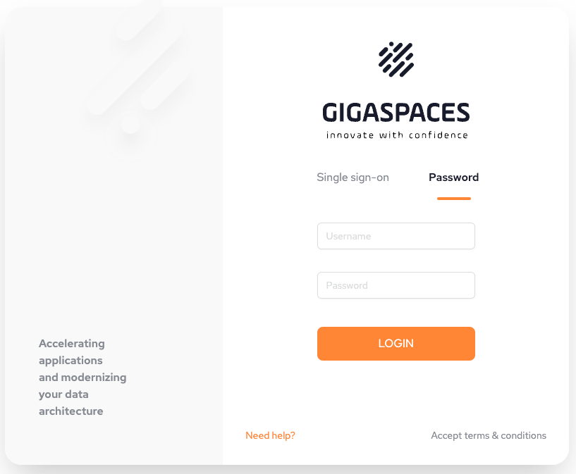
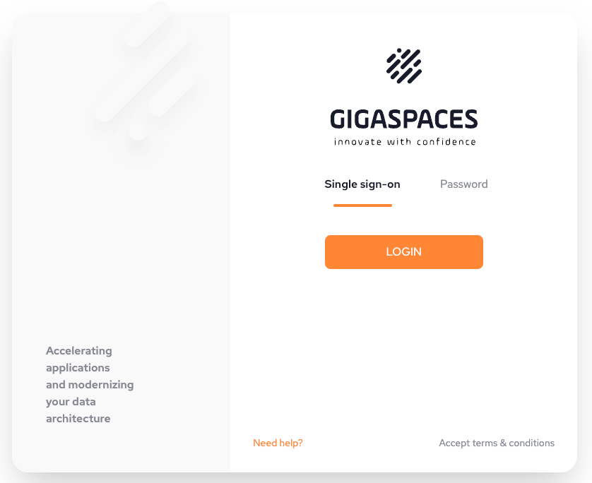

If the environmental variable AUTH=on, the login screen will display to begin using SpaceDeck.
See
The owner (superuser) of the system can use the password option with details provided by
This step must be completed in order for the superuser to configure SSO (Single sign-on).

Standard users enter their user credentials to login to Space Deck using SSO (Single Sign-On).
